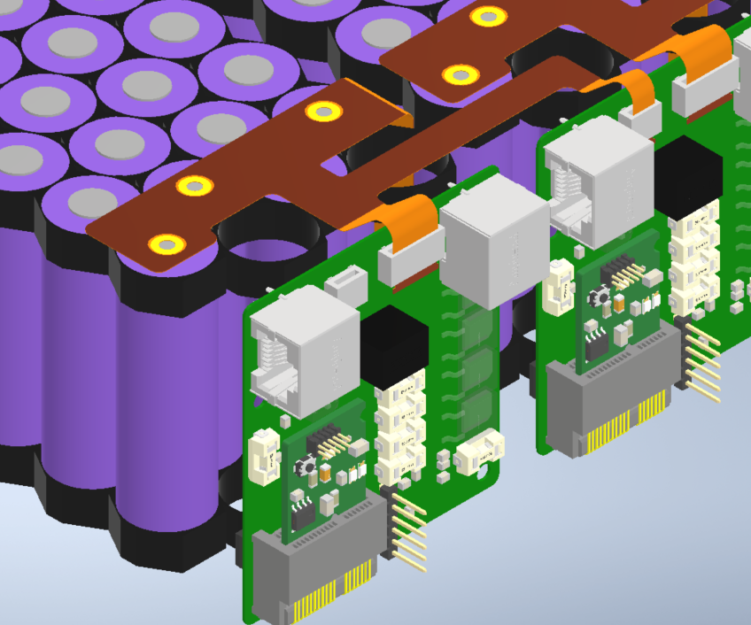
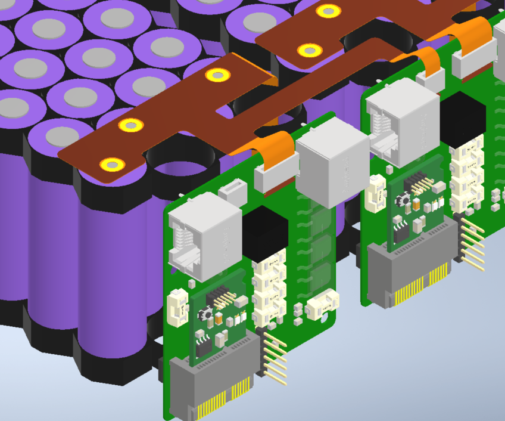

A code of ethics is a necessity in engineering, as there are often difficult, high impact
decisions that engineers face where they may face pressure to act with a disregard for ethics. This
code of ethics outlines how an engineer should act when facing this pressure, be it pressure to
abandon the common good in the name of profit, pressure to participate in a violation of ethics, or
any other sort of pressure to act in an unethical manner for one’s own benefit or even well-being.
In my personal experience, much of the need for an ethical framework shows itself when a
goal can only be achieved through a disregard for the common good or safety, and when I face
these situations, often the only course of action is to evaluate the risks involved with the decision
and be prepared to draw a line when common welfare is at risk. Ethical dilemmas are easy to find,
as they generally involve disregarding honesty and integrity willingly, but the difficulty is not in
finding them, it’s having the discipline to act against them despite pressure to do otherwise. The
decision factor drawing me away from ethical decision making in that particular case is needing to
be prepared to be the one who takes the blame for us not being able to reach our goals, even if it is
the morally correct decision, which is something I’ve prepared to do, knowing I am in the position
where I may be making difficult decisions.
The ethical issue I investigated was the Ford Pinto scandal, a case in which Ford ran a cost
benefit analysis on the price of correcting a known safety issue vs the cost of simply allowing
people to die due to the car’s flawed design, and determined that it would simply be less costly to
allow people to die. Though a strict code of ethics isn’t necessary to see the ethical dilemma, a
code of ethics would assist in resisting pressure to sacrifice the common good for the sake of profit.
In the IEEE code of ethics, it not only violated code 1, which involves making decisions with the
safety, health, and welfare of the public in mind, but also is an example of a company keeping
secrets from the public as well as holding peers accountable for acting in a way that doesn’t align
with the code of ethics. This was not the only case we discussed that followed this pattern of not
only engineers disregarding public welfare for the sake of benefitting their company, but also
nobody holding each other accountable. My group had no difficulty determining that in most of the
articles, the ethical decision was not made, however, we were not jeopardizing our jobs in making
that decision, so there was no incentive to act in an unethical manner.
This dilemma and many of the others discuss from my own, primarily due to the fact that as
early as I am in my career, I have not seen much profit-driven pressure to neglect the code of ethics.
In my experience, working on competitive engineering student organizations, most of the pressure
is to push deadlines in a way that stunts our ability to ensure team safety rather than to deliver an
unsafe product because it is cheaper. It is very easy to make ethical decisions when you have no
salary, because the pressure to make an unethical decision is very weak.
A number of the virtues of ethics were relevant to the Ford Pinto case study, the most
relevant being integrity, honesty, and responsibility. These 3 are the most applicable because the
majority of the moral dilemma surrounds a lack of integrity in choosing to put a known unsafe
vehicle to market, being dishonest to the public by showing the vehicle was safe due to it
technically meeting the contemporary safety laws, as well as responsibility for the lack of
accountability from those who decided to allow the unsafe vehicle to be put to market. The other
virtues, though one could argue that they still apply, virtues like fidelity and charity can be
tangentially applied more so than they can directly. Though there was a lack of compassion for your
fellow man, it was less of an issue of not being charitable than it was a disregard of moral principle
knowingly disregarding the wellbeing of the public. In the case of fidelity, the faithfulness in the
engineer’s employer was present and arguably misplaced, as they were already disregarding ethics.
There are also virtues that aren’t listed, such as peer-accountability, that can not only help prevent
neglecting ethical codes by creating pressure to focus on ethics, but also to protect individual
engineers from pressure from above by giving engineers the ability to leverage their common ethical
framework to resist pressure from above to disregard ethics for the sake of profit as a group as
opposed to as individuals.
The key to maintaining an ethical framework is having a common understanding of it and
knowing its value, both of which are conducive to peer accountability in upholding the ethical
principles that govern the way engineers should make moral decisions. Understanding the value of
honesty and integrity prevents future ethically bankrupt decisions from harming the public and
creating distrust with engineers.

 
